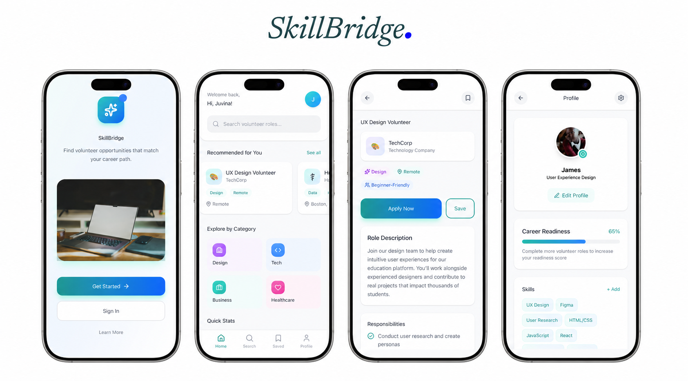
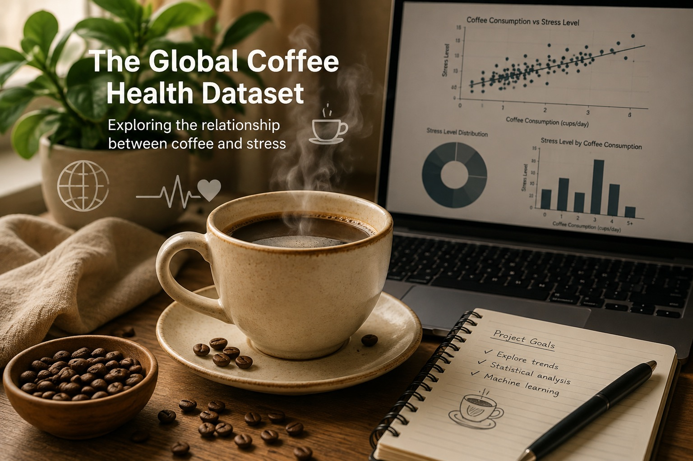
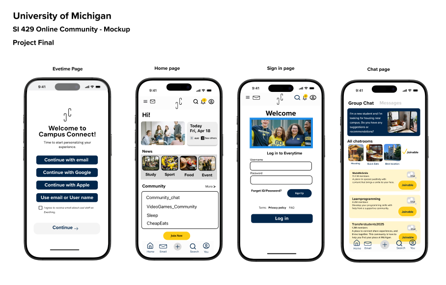

Ann Arbor Hands-On Museum Data Dashboards
Designed interactive dashboards that helped museum staff explore attendance, membership, and donor trends.
View ProjectBachelor's degree · University of Michigan
Projects that built my foundation in data analytics, UX design, programming, product thinking, and collaborative problem solving.
Designed interactive dashboards that helped museum staff explore attendance, membership, and donor trends.
View ProjectBuilt a Python graph application to explore actor connections, centrality, and collaboration paths.
View Project
Planned a platform connecting students with career-aligned volunteer opportunities and motivated employers.
View Project
Used statistical testing and machine learning to investigate whether daily coffee consumption predicts stress.
View Project
Designed a student-focused platform for discovering events, finding support, and building meaningful campus connections.
View Project